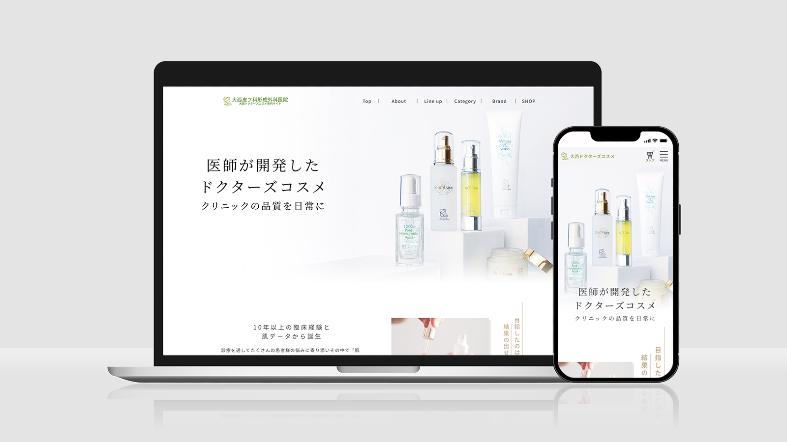
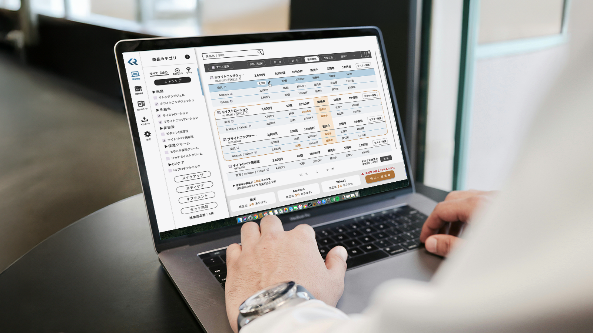
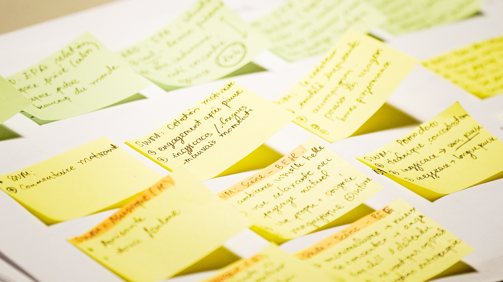

WEBサイト
実務案件
美容･医療 専門サイト改修
各サイトが担う情報を整理し、役割を明確化することで、制約がある中でも ユーザーが迷わず次の行動に進めるよう、情報設計と導線を構造から見直した事例です。
事例を見る
ユーザー視点の最適な形を考える。
SATSUKI YAMAMOTO
UX / UI Designer
WEBサイト
実務案件
各サイトが担う情報を整理し、役割を明確化することで、制約がある中でも ユーザーが迷わず次の行動に進めるよう、情報設計と導線を構造から見直した事例です。
事例を見る

SaaSプロダクト
WEBアプリケーション
自主制作
実務での多店舗運用の経験をもとに、 商品管理の分断や運用負荷といった課題を整理。店舗単位の管理から、商品単位のOOUIのデザインを採用し一元管理のできるプロダクトを想定。ユーザーの操作性と安全性の両立を目指したSaaSプロダクトを自主制作した事例です。
事例を見るポートフォリオ改善
自主制作
転職活動において、計画・仮説 → 実行 → 評価 → 改善のプロセスを迅速かつ継続的に実施。
100社近い各企業の募集要項から、採用側の不安や評価観点を観察・整理し、 評価基準を仮説立てしてポートフォリオの構成を再定義した。
「どのように課題を捉え、どのように判断し、構造に落としたか」 という一連のプロセスを踏まえた事例です。

公式サイト・通販サイトの運用改善を軸に、情報設計・UI改善・実装、 導線設計、公開後の改善運用まで一貫して対応してきました。
主な成果
WEB / EC改善
公式サイト・通販サイトの改善設計、導線見直し、購買・予約までの構造最適化、モール販路の拡大提案と実施
情報設計・UI改善
ユーザー行動や検索流入をもとにした課題整理、仮説立案、情報整理、UI改善
制作・実装
要件整理、ページ構成、デザイン、HTML / CSS / SCSS実装、公開後の改善対応
運用設計・体験設計
同梱物・販促物を含む顧客体験設計、再購入導線設計、外部連携・進行管理
ポートフォリオをご覧いただきありがとうございます。
お仕事のご相談やご連絡は、以下のフォームよりお願いいたします。